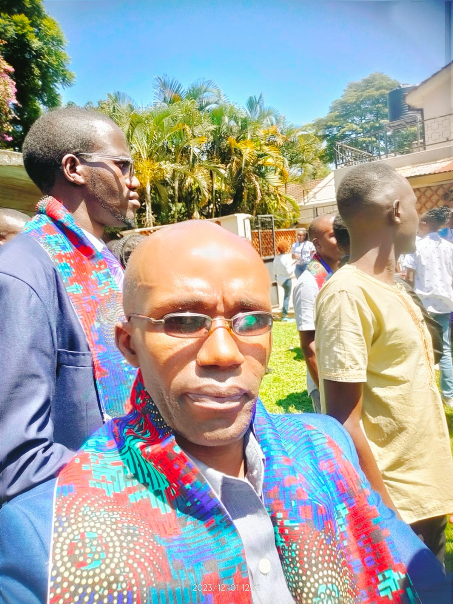
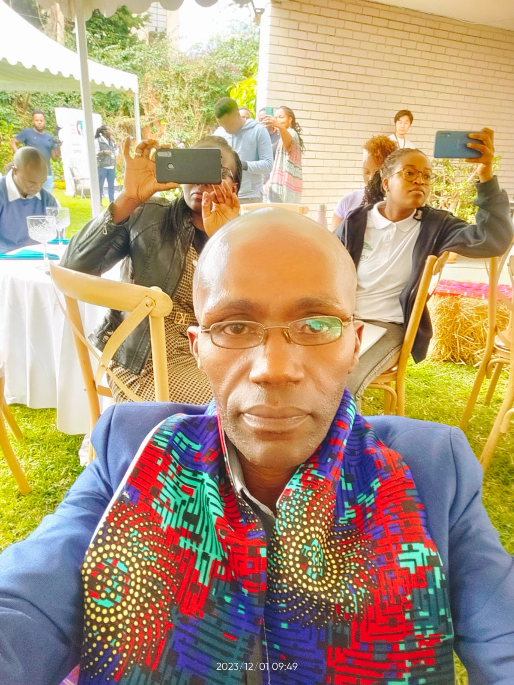
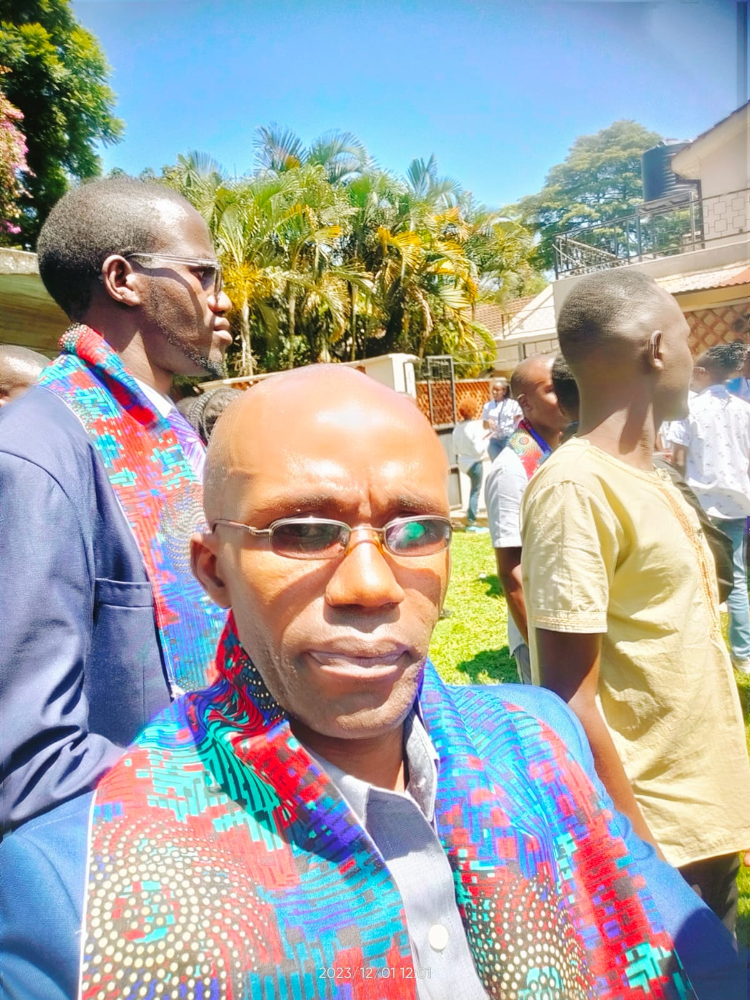
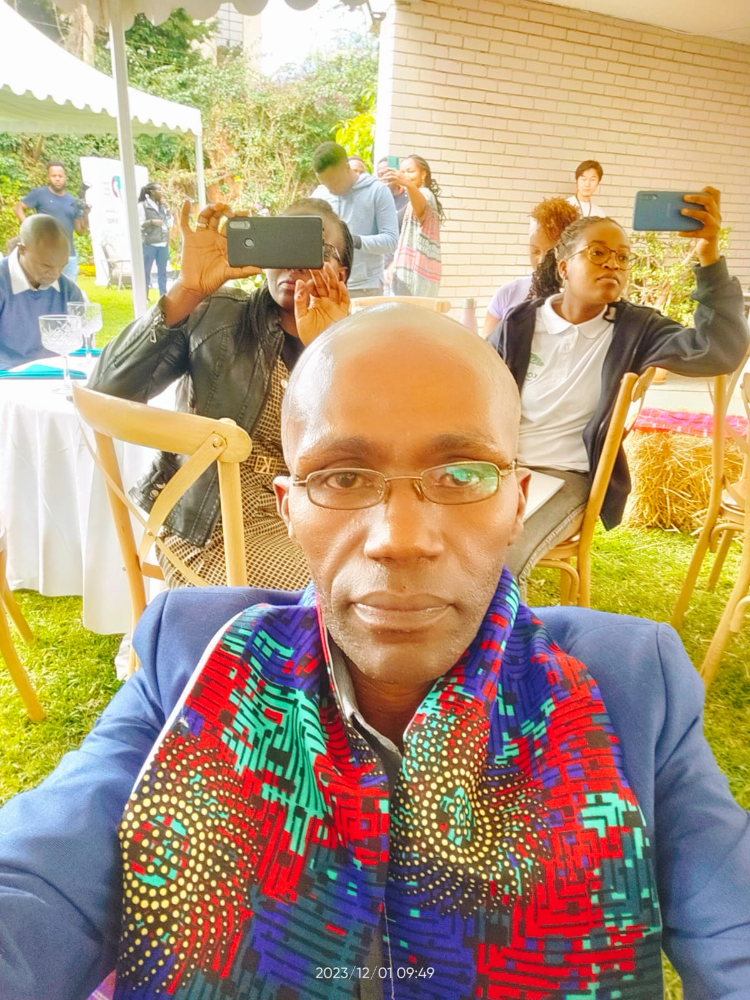

ABOUT ME

 



Hello! Charles Mbillo,
Web developer based in Nairobi, Kenya. A friend of technology with a bias towards Mobile-Tech, Climate-Tech and Economic Morality.
A junior Web Developer able to build a Web presence from ground up - from concept, navigation, layout and programming to UI/UX and SEO. Skilled at writing well designed, testable and efficient using current best practices in web development. Fast learner, hard worker, and team player with proficiency in an array of scripting languages (fullstack) and multimedia web tools. Very enthusiastic to put my skills into the tech-space as a junior developer where I may support high-end web and app solutions, bring on-board my strong drive to overcome challenges and grow in knowledge from team of experts. Over this site you will find my details, my projects, work and expertise.